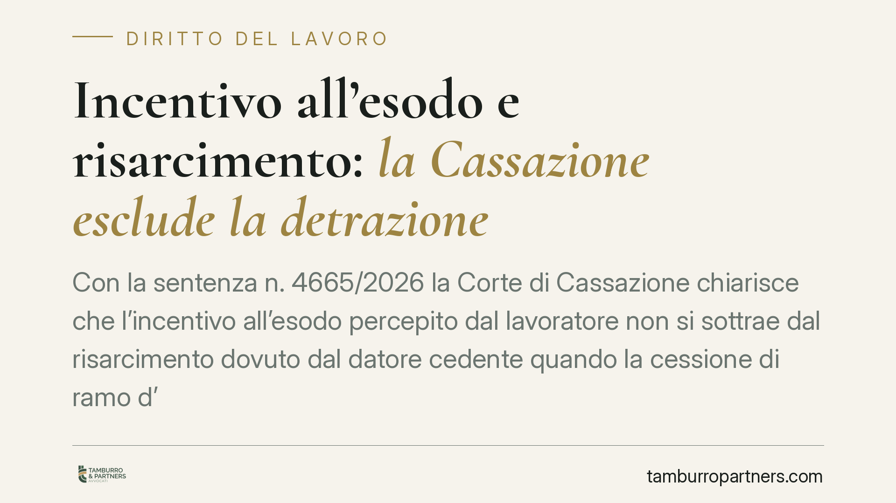

Incentivo all'esodo e risarcimento: la Cassazione esclude la detrazione
Con la sentenza n. 4665/2026 la Corte di Cassazione chiarisce che l'incentivo all'esodo percepito dal lavoratore non si sottrae dal risarcimento dovuto dal datore cedente quando la cessione di ramo d'azienda viene dichiarata illegittima. Decisiva l'assenza di un nesso causale diretto tra quella somma e l'illecito del cedente. Una pronuncia che incide sul calcolo delle poste risarcitorie.

Il caso
La vicenda nasce da una cessione di ramo d'azienda dichiarata illegittima. In questi casi il rapporto di lavoro, in teoria transitato alla società cessionaria, resta in capo al datore originario (il cedente). Il lavoratore ha però nel frattempo accettato dalla cessionaria un incentivo all'esodo, ovvero una somma corrisposta per favorire la risoluzione consensuale del rapporto.
La domanda tecnica è se quell'incentivo debba essere scomputato dal risarcimento che il cedente deve al lavoratore per il periodo in cui non ha potuto prestare attività. La Cassazione, con la sentenza n. 4665/2026, risponde di no.
Inquadramento normativo
Il riferimento è l'art. 2112 c.c., che regola la sorte dei rapporti di lavoro in caso di trasferimento d'azienda o di ramo. Quando il trasferimento è dichiarato illegittimo, il rapporto non si trasferisce e permane con il cedente, che resta obbligato a riprendere il lavoratore e a corrispondere le retribuzioni maturate.
Sul piano del risarcimento opera il principio della *compensatio lucri cum damno*: dal danno si detraggono i vantaggi economici che derivano dallo stesso fatto illecito. Il punto è proprio questo. Secondo la Corte, la detrazione è ammessa solo quando il vantaggio ha la sua causa immediata e diretta nel medesimo fatto che ha generato il danno. L'incentivo all'esodo, invece, trova origine in un atto distinto e autonomo: l'accordo tra lavoratore e cessionaria. Manca quindi il nesso causale che giustificherebbe lo scomputo.
Perché la distinzione conta
Il datore cedente risponde del proprio illecito: la cessione illegittima che ha privato il lavoratore della possibilità di lavorare e di percepire la retribuzione dovuta. L'incentivo all'esodo è frutto di una scelta negoziale compiuta con un soggetto diverso, la cessionaria, e risponde a una logica propria (incentivare l'uscita dal rapporto presso quest'ultima).
Si tratta di titoli giuridici separati. Consentire la detrazione significherebbe permettere al cedente di beneficiare di una somma versata da un terzo per una ragione del tutto estranea all'illecito. La Corte esclude questo effetto.
Implicazioni pratiche
Per il lavoratore la pronuncia è favorevole sul piano economico: l'incentivo già percepito non riduce il risarcimento spettante dal cedente. Restano due piani distinti, ciascuno con la propria causa.
Per il datore cedente cambia la strategia difensiva. Non è più sostenibile, in via automatica, l'eccezione di scomputo fondata sulla *compensatio*. Occorre dimostrare un collegamento causale diretto tra la somma e l'illecito, prova che in questo schema difficilmente sussiste.
Per la società cessionaria resta ferma l'autonomia dell'accordo transattivo: l'incentivo versato produce i propri effetti nel rapporto con quel soggetto e non si confonde con le obbligazioni del cedente.
Più in generale, la decisione conferma un orientamento rigoroso sulla *compensatio lucri cum damno*: non ogni vantaggio collaterale riduce il risarcimento, ma solo quello che discende in via immediata dallo stesso fatto dannoso.
Cosa fare in concreto
- Verificate la fonte di ogni somma percepita dal lavoratore dopo la cessione: distinguete con precisione retribuzioni dovute dal cedente, incentivi versati dalla cessionaria e altri emolumenti.
- Documentate il titolo dell'incentivo all'esodo: conservate l'accordo e ricostruite la ragione negoziale sottostante, perché è su questo che si misura il nesso causale.
- Se siete il datore cedente, non impostate la difesa sull'automatismo dello scomputo: valutate per tempo la tenuta dell'eccezione alla luce di questo orientamento.
- Se siete il lavoratore, tenete separate le due pretese: il risarcimento dal cedente e la somma dalla cessionaria seguono logiche diverse.
- In ogni caso, sottoponete la quantificazione del danno a una verifica tecnica prima di qualsiasi transazione o rinuncia.
Disclaimer
Contributo informativo a cura di Tamburro & Partners - Avv. Giuseppe Tamburro. Non costituisce parere legale.
Ogni storia di lavoro ha i suoi tempi.
Se gestisci HR e vuoi un confronto su contenzioso, ispezioni o licenziamenti, scrivi allo studio. Ti rispondiamo entro un giorno lavorativo.